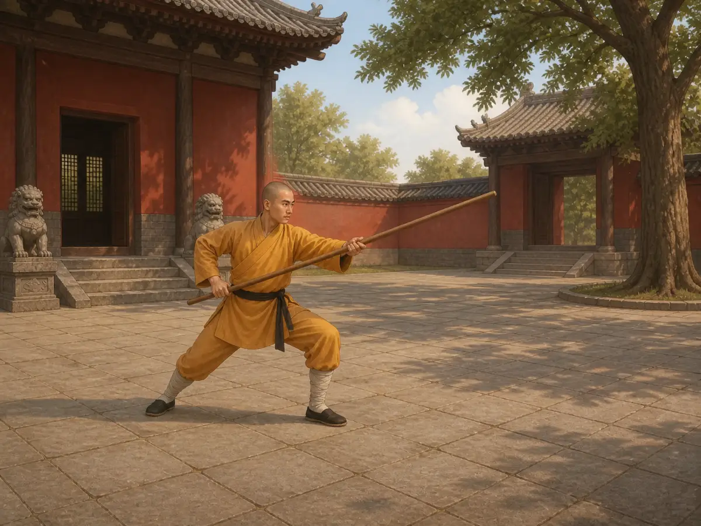

少林寺为什么会有功夫？
How Did Kung Fu Come to Shaolin Temple?
Page 1
山里的一座佛教寺院
A Buddhist Temple in the Mountains
Early in the morning, a monk sweeps the courtyard. Shaolin is first of all a Buddhist temple at the foot of Mount Song.
Shàolín Sì · 河南嵩山附近以佛教和武术传统闻名的寺院。坐落在中国中部的嵩山脚下。它首先是一座佛教寺院，不是一所武术学校。很久以前，一位来自印度的僧人来到这里讲解佛教。其他僧人也住进寺院，念经、打坐、打扫院子，还要照顾寺院周围的土地。
可是，寺院外面的世界并不总是安静。军队四处交战，盗匪也可能闯进来。少林寺有房屋、粮食和田地，住在里面的人有时不得不想办法保护它们。
这就是少林寺与武功发生关系的开始。
Shàolín Sì · 少林寺 · A Buddhist monastery near Mount Song, famous for its martial-arts tradition. stands at the foot of Mount Song in central China. It began as a Buddhist monastery, not a martial arts school. Long ago, a monk from India came there to teach Buddhism. Other monks lived at the temple, read Buddhist books, meditated, swept the courtyards, and cared for the temple’s land.
But the world outside the temple was not always peaceful. Armies fought one another, and bandits sometimes attacked. Shaolin had buildings, grain, and fields. At times, the people who lived there had to protect them.
That is where the connection between Shaolin and fighting began.
Page 2
十三位僧人参加了一场战斗
Thirteen Monks Join a Battle
战乱时，一位强大的首领抢走了少林寺的一片土地。李世民当时还不是皇帝。他是皇帝的儿子，也是一位带兵打仗的年轻将领，正在率领军队对付这位首领。
十三位少林僧人决定帮助李世民这一边。他们参加了战斗，还抓住了对方的一位将领。李世民的军队最后取得了胜利，少林寺也拿回了失去的土地。
这些僧人的名字后来被刻在少林寺的一块石碑上。他们的确参加了这场战斗，而他们帮助的李世民，很快就要成为中国历史上最有名的皇帝之一。
During a time of war, a powerful leader took land that belonged to Shaolin Temple. Li Shimin was not emperor yet. He was one of the emperor’s sons and a young army commander leading troops against that ruler.
Thirteen Shaolin monks decided to help Li Shimin’s side. They joined the fight and captured one of the other leader’s commanders. Li Shimin’s army won, and Shaolin recovered the land it had lost.
The names of the thirteen monks were later carved into a stone at Shaolin Temple. They had truly joined the battle, and the man they helped would soon become one of the most famous emperors in Chinese history.
Page 3
李世民成了皇帝
Li Shimin Becomes Emperor
李世民后来登上皇位，成为中国历史上最有名的皇帝之一。他帮助结束了多年的战争，让国家重新安定下来。
李世民没有忘记少林僧人的帮助。他感谢了他们，也让少林寺继续保有自己的土地。消息传开以后，人们记住了这件不寻常的事：一群住在山中佛寺里的僧人，竟然在战场上帮助过后来的皇帝。
少林寺还没有变成今天人们想象中的“gōngfu · 既可以指武术，也可以指长期练习形成的本领。寺院”，不过它的勇武名声已经传开了。
Li Shimin later became emperor, one of the most famous in Chinese history. He helped end years of war and bring peace back to the country.
Li Shimin did not forget the Shaolin monks. He thanked them and allowed the temple to keep its land. As the story spread, people remembered something unusual: monks from a quiet mountain temple had fought beside a future emperor.
Shaolin had not yet become the “gōngfu · 功夫 · A word that can mean martial arts or any skill developed through long practice. temple” people imagine today, but its reputation for brave fighters had begun.
Page 4
最先出名的是棍法
The Staff Came First

In a red-walled courtyard at Shaolin Temple, a monk in yellow robes practices with a long wooden staff.
李世民的那场战斗过去几百年后，一些少林僧人因为擅长棍法而出了名。棍，就是一根用来练习和格斗的长木棍。
为什么是棍？佛教戒律告诫僧人不要杀生。木棍没有刀剑那样锋利的刃，可以用来挡开刀剑、推开进攻的人，或打落对方的武器。这样，僧人不必拔出锋利的刀，也可以保护自己和别人，同时尽量不夺走生命。
不过，木棍并不是不会伤人的玩具。用力挥打，它也会让人受重伤。因此，练棍不只是学会快速出招，也要学会控制力量。僧人要练习握棍、转身、格挡和迅速改变方向。长棍呼呼地划过空气，快的时候几乎看不清两头。
来到少林寺的人看见这些本领，又把消息带到别处。少林拳法出名以前，少林棍法已经受到人们的称赞。
Hundreds of years after Li Shimin’s battle, some Shaolin monks became famous for using the staff—a long wooden stick used for practice and fighting.
Why choose a staff? Buddhist monks were taught not to kill. A staff had no sharp edge like a sword. It could block a blade, push an attacker back, or knock a weapon aside. Instead of reaching for a sharp sword, a monk could use a staff to protect himself or someone else while trying not to take a life.
But a staff was not harmless. Swung hard, it could badly hurt someone. Learning control mattered as much as learning speed. A monk practiced gripping, turning, blocking, and changing direction quickly. The staff could whoosh through the air until its two ends became a blur.
Visitors saw this skill and carried stories of it elsewhere. Shaolin staff fighting was praised long before Shaolin boxing became famous.
Page 5
从棍法到电影里的少林
From Wooden Poles to Movie Screens
后来，一些少林僧人也发展出不用兵器的拳术。他们一遍遍练习出拳、踢腿、闪避和站稳。练好这些动作需要很多年。不过，并不是每一位少林和尚都练武；有些人主要念经、打坐或管理寺院。
再后来，故事、戏剧和电影把少林武功带到了更多地方。银幕上的和尚能高高跃起、冲过一群坏人，木棍舞得让人眼花缭乱。电影会夸张，但它们让全世界都记住了“少林”这个名字。
今天，少林寺仍是一座佛教寺院，也是一处著名的武术训练之地。清晨会响起寺院的钟声，练功场上也会传来长棍划过空气的呼呼声。佛教和武术，就这样留在了同一座寺院里。
Later, some Shaolin monks also developed ways of fighting without weapons. They practiced punches, kicks, dodges, and strong stances again and again. Learning these moves took years. But not every Shaolin monk trained to fight. Some focused on Buddhist study and meditation, while others cared for the temple.
Stories, plays, and eventually movies carried Shaolin kung fu far beyond the mountain. Onscreen monks leaped through the air, raced through crowds of villains, and spun long wooden poles in a blur. Movies exaggerated the action, but they made the name “Shaolin” famous around the world.
Shaolin is still a Buddhist temple and a famous place for martial arts. Temple bells ring in the morning, and later long wooden poles whoosh across the practice yard. Buddhism and martial arts still share the same temple walls.